Pelajari fenomena kekeringan, karakteristik unik bentang alam karst, dan faktor-faktor yang
mempengaruhi ketersediaan air
💧
Mengapa Madura Rawan Kekeringan?
Pulau Madura mengalami kekeringan yang lebih parah dibanding wilayah lain di Indonesia. Hal ini
disebabkan oleh kombinasi unik antara bentang alam karst, iklim
kering, dan aktivitas manusia. Mari kita pelajari lebih dalam!
01
Pengertian Kekeringan
Apa Itu Kekeringan?
Kekeringan adalah kondisi di mana ketersediaan air jauh lebih sedikit dari yang
dibutuhkan untuk kehidupan, pertanian, dan kegiatan ekonomi. Berbeda dengan banjir atau gempa
yang terjadi tiba-tiba, kekeringan berkembang secara perlahan namun berdampak dalam
jangka waktu yang lama.
Tahukah kamu? Kekeringan bukan hanya soal "tidak ada hujan". Ada 4 tahap
kekeringan yang saling berkaitan!
4 Jenis Kekeringan yang Saling Terkait
Klik setiap kartu untuk mempelajari lebih lanjut
☁️
Kekeringan Meteorologis
Curah hujan di bawah normal
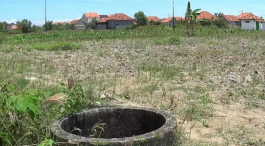
Sumber: Jatim.id Lokasi: Kabupaten Sampang
Definisi: Fase awal kekeringan yang terjadi ketika curah hujan dalam
satu musim jauh lebih rendah dari biasanya.
Indikator: Kelembapan udara menurun, suhu meningkat drastis.
Dampak di Madura: Musim tanam jagung terlambat atau gagal dimulai.
💧
Kekeringan Hidrologis
Air permukaan & air tanah menurun
Sumber: Dokumentasi Pribadi Lokasi: Desa Parsangan Sumenep
Definisi: Terjadi setelah kekeringan meteorologis berlangsung lama,
ditandai dengan penurunan debit sungai, volume waduk, dan muka air tanah.
Tantangan di Karst: Air permukaan menghilang ke dalam rekahan
batuan, sehingga sulit dipantau.
Dampak di Madura: Sumur-sumur warga mengering, mata air karst
berkurang drastis.
🌾
Kekeringan Agronomis
Tanah kering, tanaman layu
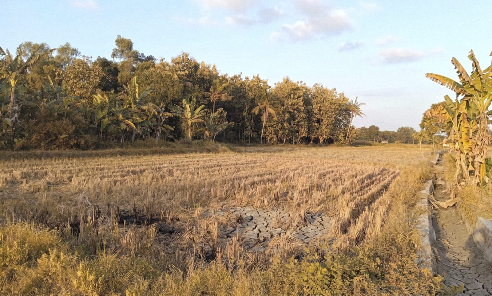
Sumber: Dokumentasi Pribadi Lokasi: Desa Parsangan Sumenep
Definisi: Kondisi di mana kandungan air dalam tanah (lengas tanah)
tidak cukup untuk memenuhi kebutuhan tanaman.
Proses: Tanaman tidak bisa menyerap air, pertumbuhan terhenti, daun
layu.
Dampak di Madura: Gagal panen padi ladang dan jagung secara massal
(puso).
👥
Kekeringan Sosial-Ekonomi
Krisis air berdampak pada masyarakat
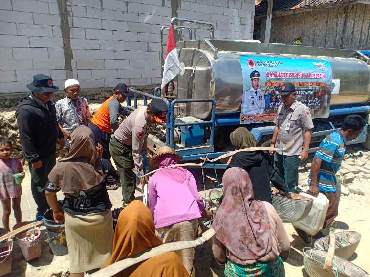
Sumber: BPBD Sumenep Lokasi: Desa Pasongsongan Sumenep
Definisi: Tahap akhir di mana kelangkaan air menyebabkan krisis
ekonomi dan kesejahteraan masyarakat.
Manifestasi: Harga air melonjak, mata pencaharian terganggu, konflik
sosial.
Dampak di Madura: Warga harus membeli air tangki dengan harga mahal,
migrasi sementara ke kota.
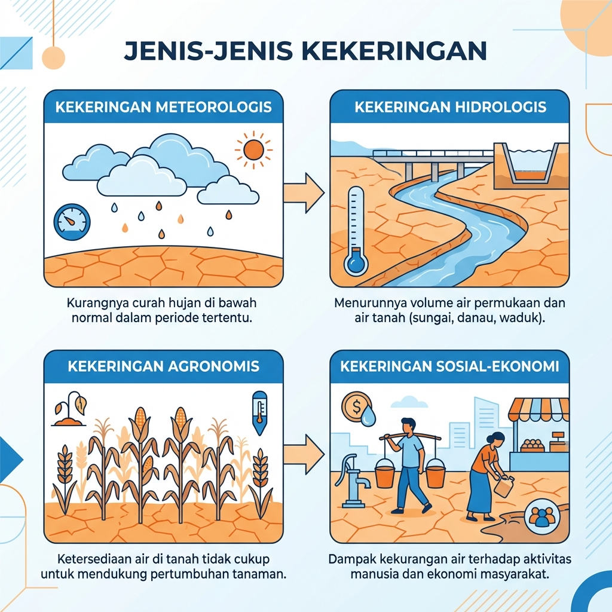
Sumber: Olah Data Peneliti
Peta: Tingkat Kekeringan Pulau Jawa Timur Sumber : Olah Data Peneliti
Distribusi Kekeringan dan Zona Fisiografis Pulau Jawa
Peta Kekeringan (Kiri): Menunjukkan bahwa Pulau Madura dan Jawa
Timur bagian utara
merupakan wilayah dengan tingkat kekeringan paling parah (zona merah/rawan kering berat).
Sementara wilayah
Jawa Tengah dan Jawa Barat memiliki tingkat kekeringan yang lebih rendah (zona kuning/normal
hingga hijau/basah).
Peta Fisiografis (Kanan): Menjelaskan mengapa Madura mengalami kekeringan
ekstrem.
Zona pink/magenta menunjukkan kawasan Pegunungan Selatan Karst Limestone
yang mendominasi Madura.
Berbeda dengan zona hijau (Zona Vulkanik Kuarter) di Jawa Tengah dan Jawa Barat yang
memiliki tanah vulkanik
subur dan dapat menyimpan air dengan baik.
Fakta Penting: Kedua peta ini menunjukkan korelasi kuat antara geologi
karst dan tingkat kekeringan.
Madura mengalami kekeringan yang lebih ekstrem karena tidak memiliki gunung berapi aktif
yang dapat menyimpan air
seperti di Jawa Tengah dan Jawa Barat. Batuan kapur di Madura menyebabkan air langsung
meresap ke bawah tanah,
sehingga permukaan tetap kering meski curah hujan turun.
Data Pendukung Sekunder
Statistik dan referensi ilmiah dari lembaga resmi yang menguatkan interpretasi peta
kekeringan dan fisiografis Pulau Jawa di atas.
Statistik Kunci
Luas Karst Madura
±78%
Dari total luas daratan Madura didominasi batuan kapur
(limestone karst)
Sumber: Peta Geologi Lembar Jawa Bagian Timur, Skala
1:500.000 — Badan Geologi ESDM
Penduduk Terdampak (2023)
487 rb
Jiwa di Madura kekurangan air bersih saat musim kemarau
panjang
Sumber: BNPB, Laporan Bencana Jawa Timur 2023
Data dari Lembaga & Literatur Ilmiah
BNPB
BNPB
Badan Nasional Penanggulangan Bencana
Berdasarkan Tabel 3.122 Kajian Risiko Bencana Jawa Timur 2022–2026, Pamekasan
dan Sumenep mencatat kelas bahaya Tinggi, sedangkan Bangkalan
dan Sampang berada pada kelas bahaya Sedang. Data ini
memperkuat zona merah pada peta kekeringan yang mendominasi seluruh wilayah
Madura.
Kabupaten
Kelas Bahaya
Bangkalan
Sedang
Sampang
Sedang
Pamekasan
Tinggi
Sumenep
Tinggi
BNPB (2022). Dokumen Kajian Risiko Bencana Provinsi
Jawa Timur 2022–2026, Tabel 3.122. Jakarta: Badan Nasional
Penanggulangan Bencana.
BPS
BPS Jawa Timur
Badan Pusat Statistik Provinsi Jawa Timur
Survei BPS mencatat bahwa akses rumah tangga terhadap air bersih layak di Madura
hanya 34–48%, jauh di bawah rata-rata Jawa Timur (72%) dan
rata-rata nasional (91%). Hal ini berkorelasi langsung dengan minimnya cadangan
air tanah di kawasan karst.
"Persentase RT dengan akses air minum layak terendah: Sampang 34,2%, Bangkalan
41,8%, Pamekasan 47,6%."
BPS Jatim (2023). Jawa Timur Dalam Angka 2023.
Surabaya: Badan Pusat Statistik Provinsi Jawa Timur.
JIL
Jurnal Ilmiah
Hidrologi & Geologi Karst
Penelitian hidrogeologi menjelaskan bahwa akuifer karst bersifat
conduit-dominated: air hujan meresap cepat melalui rekahan dan ponor,
meninggalkan permukaan yang kering meski curah hujan turun. Karakteristik ini
membuat kawasan karst sangat rentan terhadap kekeringan permukaan.
"Karst aquifers in Java's southern limestone belt exhibit rapid recharge but
poor surface retention, causing persistent surface drought even during wet
seasons."
Haryono, E. & Day, M. (2004). Landform
Differentiation within the Gunung Kidul Kegelkarst. Journal of Cave and
Karst Studies, 66(2), 62–69.
Interpretasi Peta yang Dikuatkan Data Sekunder
Peta Kekeringan (Kiri) — Zona Merah/Rawan Berat di Madura
Zona merah (kering berat) yang mendominasi Madura pada peta dikuatkan oleh
Tabel 3.122 BNPB yang mencatat Pamekasan dan Sumenep berada pada
kelas bahaya Tinggi, sedangkan Bangkalan dan Sampang pada kelas
bahaya Sedang. Kondisi ini konsisten dengan minimnya sumber air
permukaan di kawasan karst yang menyebabkan defisit air berulang setiap musim
kemarau.
Peta Fisiografis (Kanan) — Zona Pink/Magenta Karst Limestone Madura
Zona pink pada peta fisiografis menunjukkan Pegunungan Selatan Karst Limestone yang
mencakup ±78% luas Madura (Badan Geologi ESDM, Peta Geologi Lembar
Jawa Bagian Timur). Penelitian Haryono & Day (2004) membuktikan bahwa akuifer
karst bersifat conduit-dominated — air hujan langsung meresap ke
bawah tanah tanpa tersimpan di permukaan. Inilah yang menjelaskan korelasi antara
zona fisiografis pink dengan zona merah (kering berat) pada peta kekeringan di
sebelah kiri.
Daftar Referensi
Referensi Data Sekunder yang Digunakan
BNPB (2022). Dokumen Kajian Risiko Bencana Provinsi Jawa Timur
2022–2026, Tabel 3.122. Jakarta: Badan Nasional Penanggulangan Bencana.
BPS Provinsi Jawa Timur (2023). Jawa Timur Dalam Angka 2023. Surabaya:
Badan Pusat Statistik Provinsi Jawa Timur.
Haryono, E. & Day, M. (2004). Landform Differentiation within the Gunung
Kidul Kegelkarst. Journal of Cave and Karst Studies, 66(2), 62–69.
Karst Madura: Kering di Atas, Air di Bawah
Sebagian besar wilayah Madura (terutama bagian utara dan tengah) memiliki bentang
alam karst — batuan kapur yang mudah larut oleh air hujan.
Ini menciptakan bentuk unik:
Permukaan: Tanah tipis, gersang, hampir tidak ada sungai
Bawah tanah: Sistem sungai bawah tanah dan gua-gua yang menyimpan
air
Sayangnya, air bawah tanah ini sulit diakses oleh masyarakat, sehingga meski ada air,
tetap terjadi krisis air di permukaan.
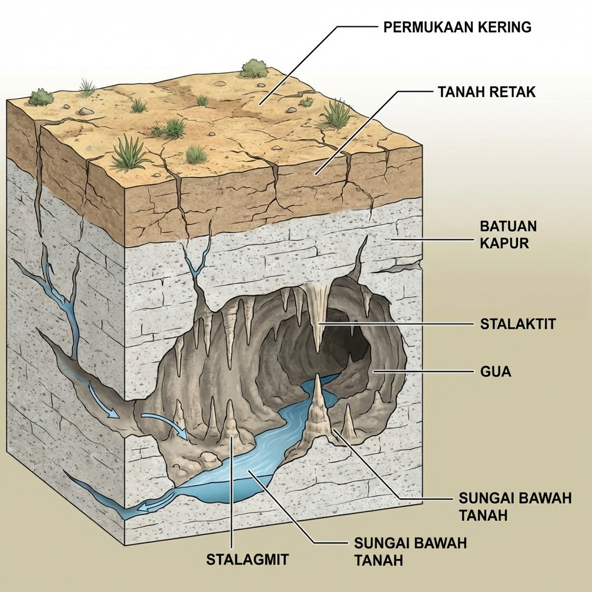
Ilustrasi: Penampang melintang bentang alam karst
Sumber : Olah Data Peneliti
Perbandingan: Bentuk Lahan Vulkanik vs Karst
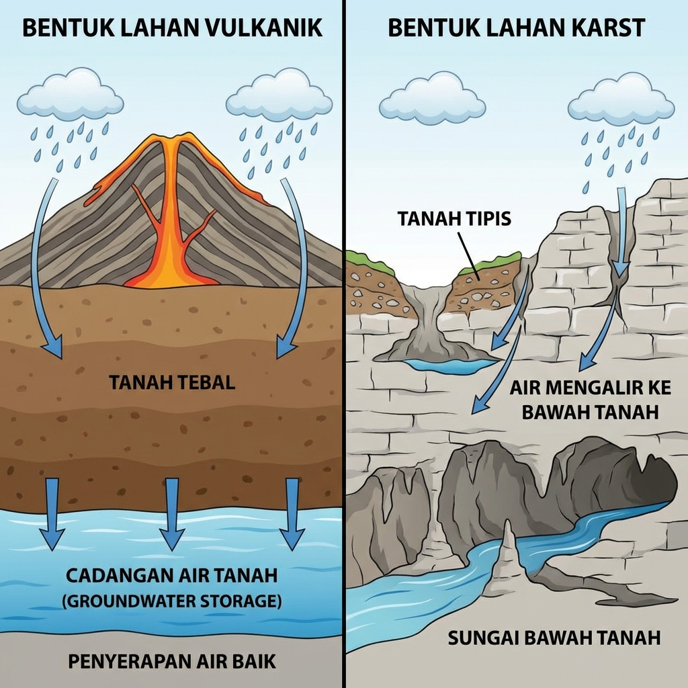
Diagram: Perbedaan kemampuan penyimpanan air antara bentuk lahan vulkanik dan karst Sumber : Olah Data Peneliti
Mengapa berbeda?
Lahan Vulkanik: Tanah tebal dari abu vulkanik dapat menyerap dan
menyimpan air dengan baik, sehingga cadangan air tanah melimpah.
Lahan Karst: Batuan kapur mudah larut, tanah tipis, air langsung
mengalir ke bawah tanah melalui rekahan, sulit diakses oleh masyarakat.
Karakteristik Geologi dan Geomorfologi Karst Madura
Keunikan bencana kekeringan di Pulau Madura berakar pada arsitektur
geologisnya yang didominasi oleh batuan sedimen karbonat (batuan kapur).
Bentang alam karst di pulau ini merupakan kelanjutan dari zona pegunungan kapur yang
memanjang dari Jawa Tengah dan Jawa Timur, yang kemudian terangkat ke permukaan melalui
proses tektonik.
Meskipun tergolong merokarst (karst yang sudah tua dan tererosi), Madura memiliki
keragaman fitur geomorfologis yang sangat kaya:
Fitur Permukaan (Eksokarst)
🏔️
Kegelkarst (Cone Karst)
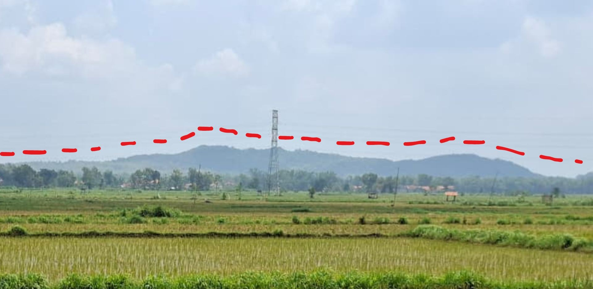
Sumber: Dokumentasi Pribadi Lokasi: Bukit Pamekasan Utara
Bukit-bukit kapur berbentuk kerucut yang sambung menyambung, banyak tersebar di
wilayah Pamekasan Utara dan Tengah.
🕳️
Dolin (Cekungan)
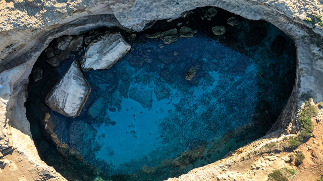
Sumber: BRIN
Cekungan di antara bukit-bukit karst yang tertutup oleh tanah
kesuburan rendah namun mampu menahan sedikit
air untuk pertanian subsisten.
Fitur Bawah Permukaan (Endokarst)
🏞️
Gua (Caves)
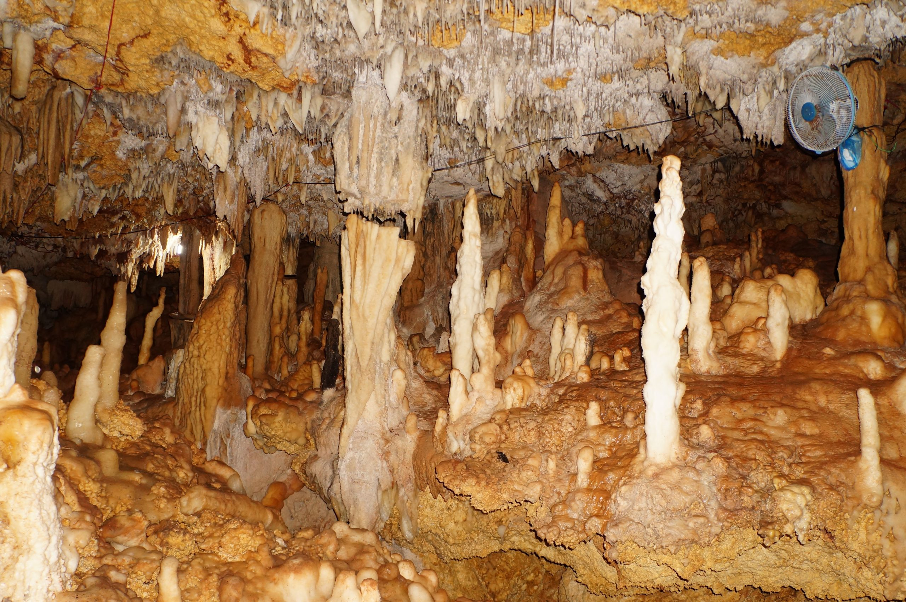
Sumber: Suara Indonesia Lokasi: Goa Blaban Pamekasan
Rongga bawah tanah hasil pelarutan kalsium karbonat. Contoh: Gua
Blaban di Pamekasan (ditemukan saat warga menggali sumur),
Gua Waru, dan Gua Paseset.
Di dalam gua terdapat speleotem seperti stalaktit
(menggantung dari atap) dan stalagmit (tumbuh dari lantai).
💧
Sungai Bawah Tanah
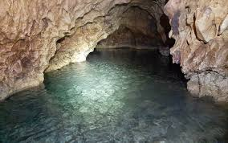
Sumber: Pacitanku.com
Fitur paling vital bagi penduduk! Aliran air permanen dalam lorong gua bawah
permukaan.
⚠️ Sayangnya, air ini sulit diakses oleh masyarakat umum.
Persebaran Fitur Karst Madura
Nama Fitur
Deskripsi Geomorfologis
Contoh Lokasi di Madura
Kegelkarst
Bukit kapur berbentuk kerucut yang sambung menyambung
Pamekasan Utara dan Tengah
Gua (Caves)
Rongga bawah tanah hasil pelarutan kalsium karbonat
Gua Blaban, Gua Waru, Gua Paseset
Sungai Bawah Tanah
Aliran air permanen dalam lorong gua bawah permukaan
Gua Pancong Pote, Gili Iyang
Terra Rosa
Tanah merah sisa pelarutan batugamping
Lembah-lembah di antara bukit karst Madura
Ringkasan: Jenis Kekeringan dan Dampaknya di Madura
Jenis Kekeringan
Parameter Utama
Dampak bagi Masyarakat Madura
Meteorologis
Defisit curah hujan bulanan/musiman
Terhambatnya awal musim tanam jagung
Hidrologis
Penurunan elevasi air sumur dan mata air
Kelangkaan air bersih domestik di pedesaan
Agronomis
Penurunan kadar lengas tanah di bawah titik layu
Kegagalan panen padi ladang dan jagung
Sosial-Ekonomi
Kesenjangan penawaran dan permintaan air
Kenaikan biaya pembelian air tangki
02
Faktor-Faktor Penyebab Kekeringan
Kekeringan di Madura disebabkan oleh kombinasi faktor global (perubahan iklim
dunia) dan faktor lokal (kerusakan lingkungan dan kondisi alam setempat). Mari
kita pelajari
satu per satu.
Faktor Global: Fenomena El Niño
Apa itu El Niño?
El Niño adalah fenomena pemanasan suhu permukaan laut di Samudera
Pasifik bagian tengah. Ketika El Niño terjadi, massa udara lembap yang biasanya membawa
hujan ke Indonesia bergeser menjauh, sehingga curah hujan di Madura menurun
drastis.
Mekanisme El Niño:
Suhu laut Pasifik tengah meningkat
Angin pasat melemah
Massa udara lembap bergeser ke timur (menjauhi Indonesia)
Curah hujan di Indonesia berkurang
Kekeringan terjadi di Madura dan wilayah lain
Dampak tambahan: Pemanasan global membuat pola hujan semakin tidak
menentu — hujan datang terlambat, intensitas tinggi tapi durasi pendek, sehingga air
tidak sempat meresap ke tanah dan langsung mengalir ke laut.
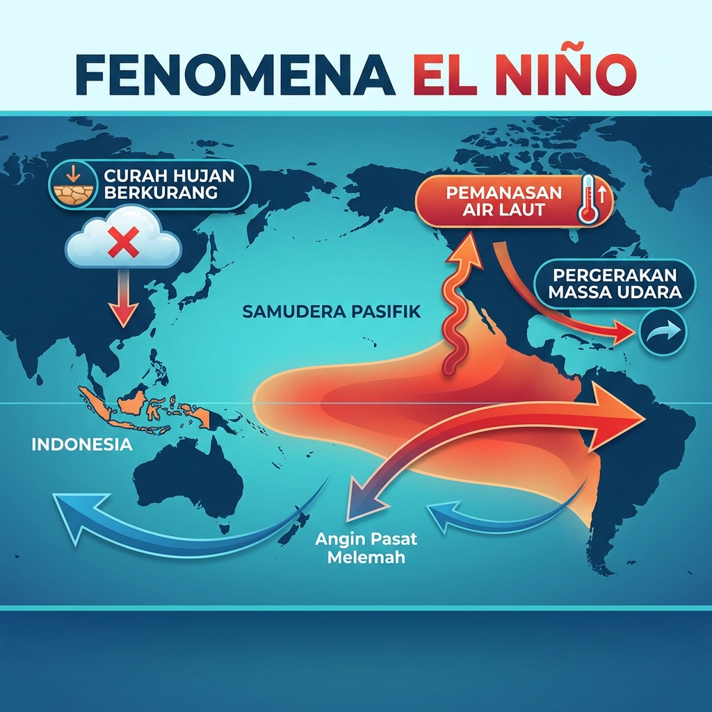
Diagram: Pengaruh El Niño terhadap curah hujan di Indonesia Sumber : Olah Data Peneliti
Faktor Lokal Kekeringan di Madura
Sementara itu pada lingkup setempat, Madura memiliki kondisi cuaca yang khas yang ikut
mengagresifkan kekeringan. Mari kita pelajari dari faktor iklim lokal ini!
Faktor Lokal: Suhu Tinggi & Penguapan (Evaporasi) Besar
Ilustrasi: Sinar matahari terik dan penguapan air yang tinggi. Sumber : Olah Data Peneliti
Panasnya Udara yang Menguras Cadangan Air
Walaupun bentukan batuan kapur tadi sangat krusial, cuaca harian juga berkontribusi
secara langsung! Karakter dasar iklim pulau Madura pada umumnya panas dan
kering.
Karakteristik Iklim Madura:
Dominan Panas & Kering: Suhu udara harian cukup terik dan
ekstrem.
Tutupan Lahan Terbatas: Area pepohonan lebat dan hutan
rindang sebagai pelindung / peneduh minim.
Apa imbasnya? Kelembapan tanah alami yang perlahan hilang akibat cuaca
yang membakar. Sedikitnya "pepohonan payung" untuk menghalangi terik memaksa tanah
terjemur mentah-mentah. Akibatnya, air tanah dangkal itu dipaksa berubah jadi gas akibat
tingkat penguapan yang terlampau esktrem (evaporasi). Cadangan air pun menguap ke
serapah udara dengan pesat!
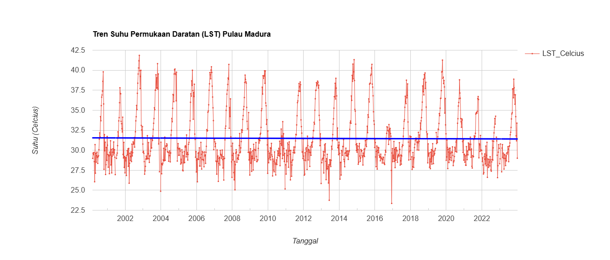
Sumber: Olah data peneliti via Google Earth Engine (Dataset: MODIS Terra
MOD11A2.061)
Data Termal: LST
Sebagai pembuktian, data Land Surface Temperature (LST) di Pulau Madura periode
2001–2023 menunjukkan tingkat fluktuasi suhu yang cukup ekstrem, dengan rincian:
Kisaran Suhu Maks-Min: ±24°C hingga ±42°C
Rata-rata Suhu Harian: ±31°C - 32°C
Kondisi ini mengindikasikan
bahwa wilayah Madura memiliki karakter termal yang relatif panas secara
konsisten. Tingginya suhu permukaan ini ikut mendongkrak laju
evapotranspirasi, sehingga mempercepat kehilangan sisa cadangan air dari
tanah. Disandingkan bersama curah hujan yang fluktuatif, suhu ekstrem ini menjadi
faktor sekunder pengunci resiko kekeringan skala besar di wilayah tersebut.
Kesimpulan Singkat
Kekeringan di Madura tak ubahnya pukulan beruntun! Dimulai dari Faktor Global (Siklus El
Niño) yang mengerem datangnya hujan, diperparah lagi dengan ancaman Faktor
Lokal yaitu suhu panas yang menguapkan sisa-sisa persediaan air
secara amat gencar. Perpaduan siklus cuaca makro dan kondisi iklim mikro inilah perusak utama
stabilitas air.